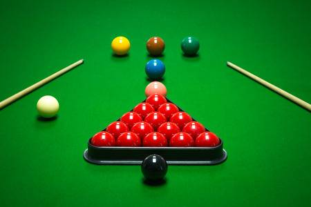
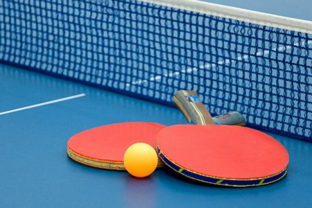
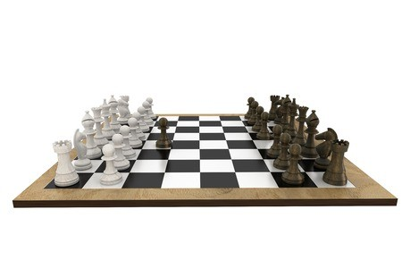
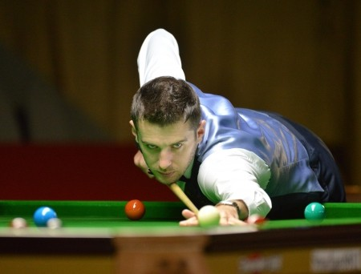
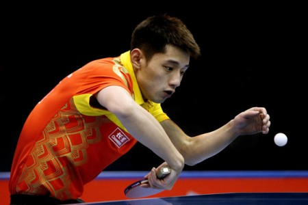
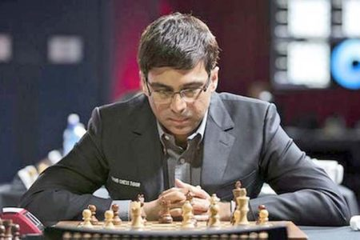

Indoor games and sports are a variety of structured forms of play or competitive physical activity, typically carried out either in the home or in specially constructed indoor

In snooker there are 22 balls: 1 cue-ball, 15 reds and 6 colours. A player must first pot one of the red balls (scoring 1 point) and then one of the colours, which are worth between 2 points (yellow) and 7 (black). The colour ball is put back on the table, and the player tries to put another red. The turn or break continues until the player fails to score or plays a foul shot. When all the reds have gone, the colours are potted in sequence from yellow to black, which marks the end of the game or frame. The winner of the frame is the player with the most points. Most professional matches are decided over a fixed number of frames.

Table tennis, also known as ping-pong and whiff-whaff, is a sport in which two or four players hit a lightweight ball back and forth across a table using small rackets. The game takes place on a hard table divided by a net. Except for the initial serve, the rules are generally as follows: players must allow a ball played toward them to bounce one time on their side of the table, and must return it so that it bounces on the opposite side at least once.

Chess is a two-player strategy board game played on a checkered board with 64 squares arranged in an 8×8 grid. Played by millions of people worldwide, chess is believed to be derived from the Indian game chaturanga sometime before the 7th century. Chaturanga is also the likely ancestor of the East Asian strategy games xiangqi (Chinese chess), janggi (Korean chess), and shogi (Japanese chess). Chess reached Europe by the 9th century, due to the Umayyad conquest of Hispania.
1.Mark Selby

2.Timo Boll

3.Vishwanathan Anand
